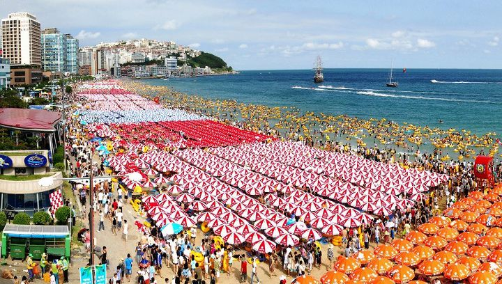
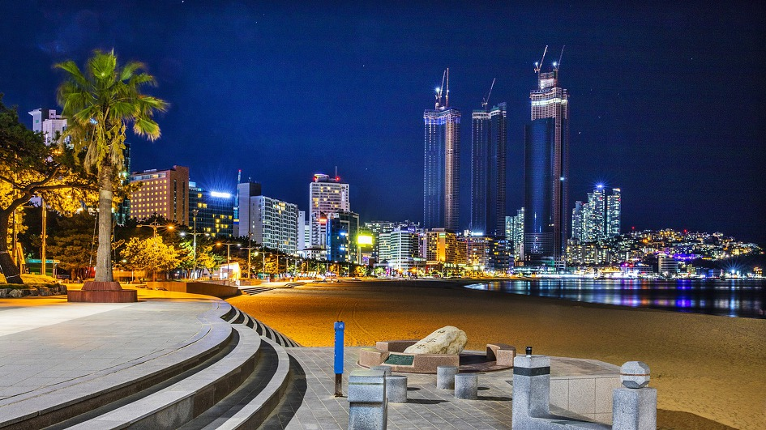

해운대 해수욕장
[
해운대 해수욕장
]
백사장의 길이가 1.5km, 폭 40~80m, 면적 87,600㎡로
수심이 얕고 조수의 변화가 심하지 않으며
주변에 각종 시설이 많아 해마다 천만명이 넘는
피서객이 찾아오고 있는 대한민국
의 NO.1 해수욕장입니다.
또 매년 해수욕장 개장과 어울러 각종행사와 축제가 개최되어
해운대를 찾는 관광객들에게 풍성한 볼거리를 제공하고 있습니다.
[
한여름의 해운대 해수욕장
]

[
해운대 해수욕장의 야경
]
